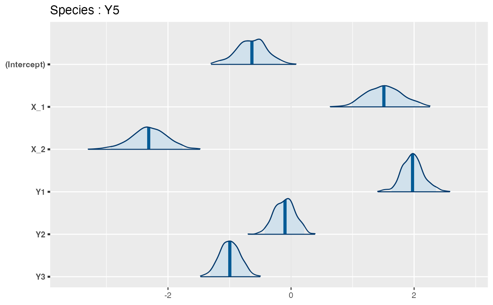

trophicSDM is used to fit a trophic species distribution model. Requires the species distribution data Y (the sites x species matrix), explanatory variables X and a directed acyclic graph G containing species interactions (i.e., the metaweb, with links going from predators to prey). The function fits the distribution of each species as a function of their preys (with mode = "prey", by default) or predators (if set mode = "predator").
trophicSDM(
Y,
X,
G,
env.formula = NULL,
sp.formula = NULL,
sp.partition = NULL,
penal = NULL,
mode = "prey",
method = "stan_glm",
family,
iter = 500,
chains = 2,
run.parallel = FALSE,
verbose = FALSE
)The sites x species matrix containing observed species distribution (e.g. presence-absence).
The design matrix, i.e. sites x predictor matrix containing the value of each explanatory variable (e.g. the environmental conditions) at each site.
The species interaction network (aka metaweb). Needs to be an igraph object. Links must go from predator to preys. It needs to be a directed acyclic graph.
The definition of the abitic part of the model. It can be :
a string specifying the formula (e.g. "~ X_1 + X_2"). In this case, the same environmental variables are used for every species.
A list that contains for each species the formula that describes the abiotic part of the model. In this case, different species can be modeled as a function of different environmental covariates. The names of the list must coincide with the names of the species.
(optional) It allows to specify a particular definition of the biotic part of the model, e.g., using composite variables (e.g., richness), or an interaction of the biotic and abitic component. More details in 'Details'.
(optional) a list to specify groups of species that are used to compute composite variables, e.g., a species can be modelled as a function of the richness of each group of preys. It has to be a list, each element is a vector containing the names of species in the group. More details in 'Details'.
Penalisation method to shrink regression coefficients. If NULL (default), the model does not penalise the regression coefficient. For now, available penalization method are "horshoe" for method stan_glm, "elasticnet" for method glm. It is also possible to constrain the sign of biotic coefficients (prey coefficients are set to posite and predator coefficients to negative) by setting "coeff.signs" for methods glm and stan_glm.
"prey" if bottom-up control (default), "predators" otherwise. Notice that G needs to be such that links point from predators to prey.
which SDM method to use. For now the available choises are: "glm" (frequentist) or "stan_glm" (full bayesian MCMC, default). Notice that using "glm" does not allow error propagation when predicting.
the family parameter of the glm function (see glm). gaussian(link = "identity") for gaussian data. binomial(link = "logit") or binomial(link = "probit") for presence-absence data.
(for "stan_glm" only) Number of iterations for each MCMC chain if stan_glm is used
(for "stan_glm" only) Number of MCMC chains (default to 2)
Whether species models are fitted in parallel (can speed computational up time). Default to FALSE.
Whether to print algorithm progresses
A "trophicSDMfit" object, containing:
A list containing the local models (i.e. a SDM for each species). Each local model is an object of class "SDMfit". See ?SDMfit for more informations.
A numeric vector of standard errors on parameters
A list describing each species formula (both biotic and abiotic terms)
A list containing all the data used to fit the model
A list containing the modeling choices of the fitted model (e.g. method, penalisation...)
A list containing, for each species, the inferred coefficients (with credible intervals or p-values when available)
MCMC convergence metrics, only available for MCMC methods
Model's AIC
Model's log.likelihood
"sp.formula" and "sp.partition" can be combined to define any kind of composite variables for the biotic part of the formula. "sp.formula" can be :
A string defining a formula as function of "richness". E.g., "richness+I(richness)^2" (species are modelled as a function of a quadratic polyome of their prey richness), "I(richness>0)" (species are modelled as a function of a dummy variable that is equal to 1 when at least one species is present). Importantly, when group of preys (or predators) are specified by "sp.partition", species are modeled as a function of the composite variable specified by "sp.formula" for each of their prey (or predator) groups.
A more flexible option is to specify sp.formula as a list (whose names are species' names) that contains for each species the definition of the biotic part of the model. Notice that, in this case, the function does not check that the model is a DAG. This allow to define any kind of composite variable, or to model interactions between environmental covariates and preys (or predators).
data(Y, X, G)
# define abiotic part of the model
env.formula = "~ X_1 + X_2"
# Run the model with bottom-up control using stan_glm as fitting method and no penalisation
m = trophicSDM(Y,X,G, env.formula,
family = binomial(link = "logit"), penal = NULL,
mode = "prey", method = "stan_glm")
#> [1] "--- Species Y1 ---"
#> [1] "--- Species Y2 ---"
#> Warning: Bulk Effective Samples Size (ESS) is too low, indicating posterior means and medians may be unreliable.
#> Running the chains for more iterations may help. See
#> https://mc-stan.org/misc/warnings.html#bulk-ess
#> Warning: Tail Effective Samples Size (ESS) is too low, indicating posterior variances and tail quantiles may be unreliable.
#> Running the chains for more iterations may help. See
#> https://mc-stan.org/misc/warnings.html#tail-ess
#> [1] "--- Species Y3 ---"
#> [1] "--- Species Y5 ---"
#> Warning: Tail Effective Samples Size (ESS) is too low, indicating posterior variances and tail quantiles may be unreliable.
#> Running the chains for more iterations may help. See
#> https://mc-stan.org/misc/warnings.html#tail-ess
#> [1] "--- Species Y4 ---"
#> [1] "--- Species Y6 ---"
print(m)
#> ==================================================================
#> A trophicSDM fit with no penalty, fitted using stan_glm
#> with a bottom-up approach
#>
#> Number of species : 6
#> Number of links : 6
#> ==================================================================
#> * Useful fields
#> $coef
#> * Useful S3 methods
#> print(), coef(), plot(), predict(), evaluateModelFit()
#> predictFundamental(), plotG(), plotG_inferred(), computeVariableImportance()
#> * Local models (i.e. single species SDM) can be accessed through
#> $model
# Access local models (e.g. species "Y5")
m$model$Y5
#> ==================================================================
#> Local SDMfit for species Y5 with no penalty , fitted using stan_glm
#> ==================================================================
#> * Useful S3 methods
#> print(), coef(), plot(), predict()
#> $model gives the stanreg class object
#> ==================================================================
coef(m$model$Y5)
#> mean 2.5% 97.5%
#> (Intercept) -0.6072851 -1.0670483 -0.1585365
#> X_1 1.4831383 0.9198980 2.0070599
#> X_2 -2.2905763 -2.8020410 -1.7325982
#> Y1 1.9609420 1.6260514 2.3129873
#> Y2 -0.1020190 -0.4238213 0.2554132
#> Y3 -0.9948627 -1.3175241 -0.7091001
plot(m$model$Y5)
